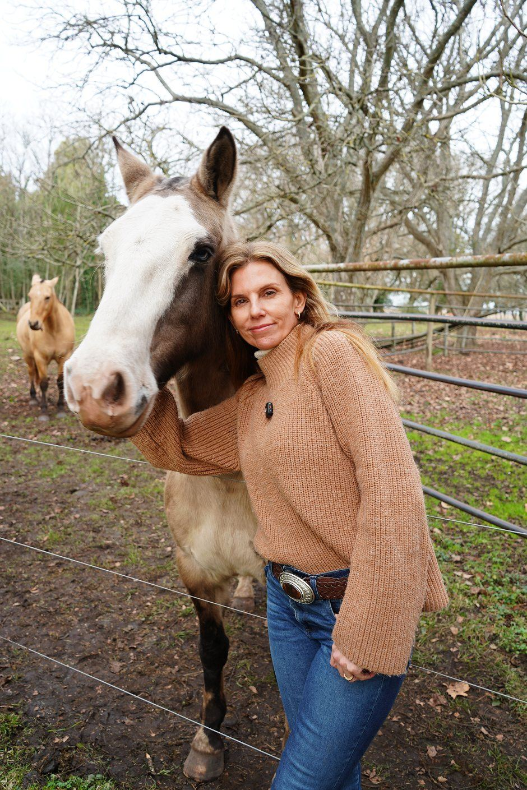

Un camino para descubrirte más auténtica y sentirte más plena.
Un taller pensado para mujeres valientes que deseen explorar e integrar aquellos aspectos menos conocidos de sí mismas, para descubrirse más auténticas y sentirse más plenas.
En este proceso podrás encontrar el origen de bloqueos y miedos limitantes que se manifiestan en comportamientos que impactan negativamente en tus relaciones y en tus resultados.
Haremos un profundo camino de introspección para entrar en contacto con ellos, comprenderlos y transformarlos, dando lugar a la belleza que habita en vos.
¿Cómo lo haremos?
Cupos limitados
Quiero sumarme
Regalarme este taller de mujeres fue la mejor decisión. Un espacio sumamente gratificante que me enseñó a conectar con mi interior, escuchar mis necesidades y dejar de juzgarme.
Aprendí que amarme y ponerme en primer lugar es el primer paso para poder ofrecerle una mejor versión de mí a mi entorno.
Agradecida por este proceso.
Con mucha gratitud, quiero agradecerte a vos, Cata, por lo que me dejó Vivir con Propósito.
Me invitó a mirarme hacia adentro, escucharme y reconocer todo aquello que habita en mí.
Me llevo nuevos aprendizajes, más confianza y la certeza de que mi propósito se construye paso a paso, siendo fiel a quien soy.
Vivir con Propósito me enseñó a poder mirarme con amor, hablarme con dulzura, sanar heridas y reconocer todo lo hermoso que habita en mí.
Fue una experiencia maravillosa.
Gracias, Cata, por acompañarme y guiarme para transformar. Solo palabras de agradecimiento.
El taller me brindó la oportunidad de pensar el mundo y pensarme desde una perspectiva diferente.
Me pude ver en un espejo que me devolvía una mirada amorosa, paciente y confiada. Fue un espacio que puso luz en lo posible dentro de mí.
Lo más lindo fue compartirlo con un grupo de hermosas mujeres.
Cupos limitados para el próximo grupo presencial.
Quiero sumarme